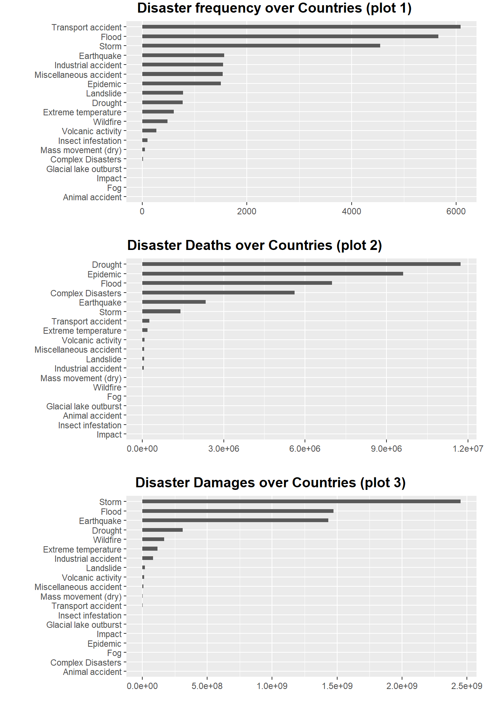
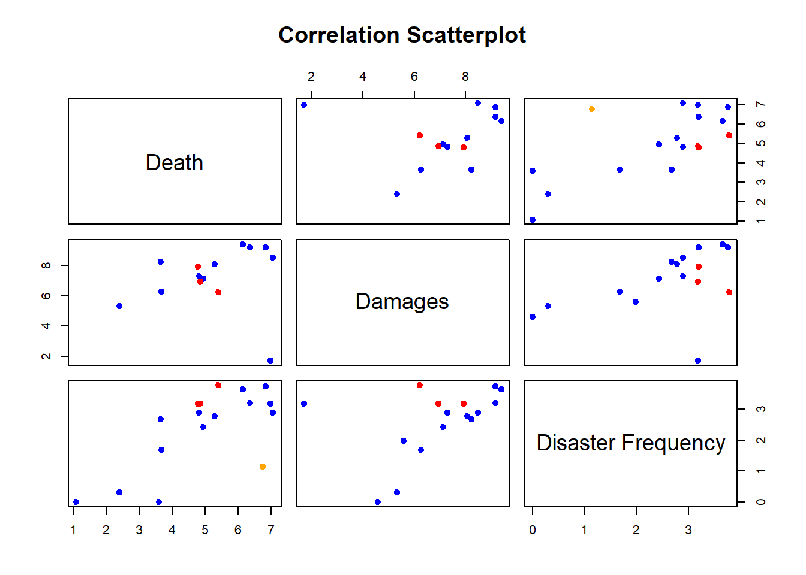
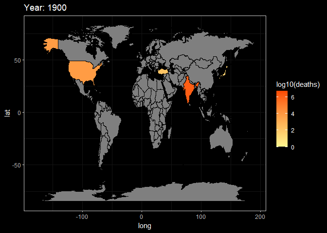
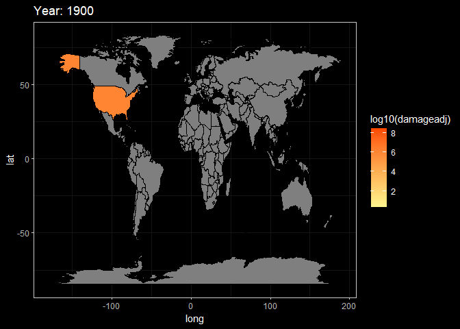
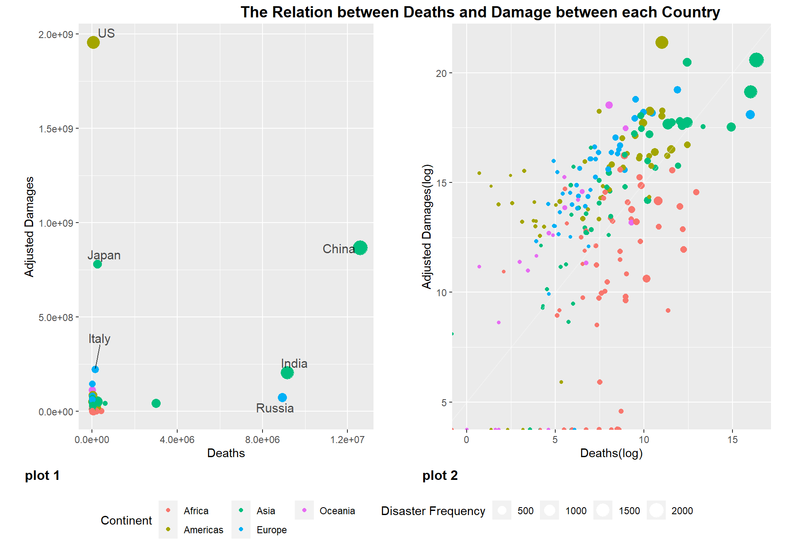
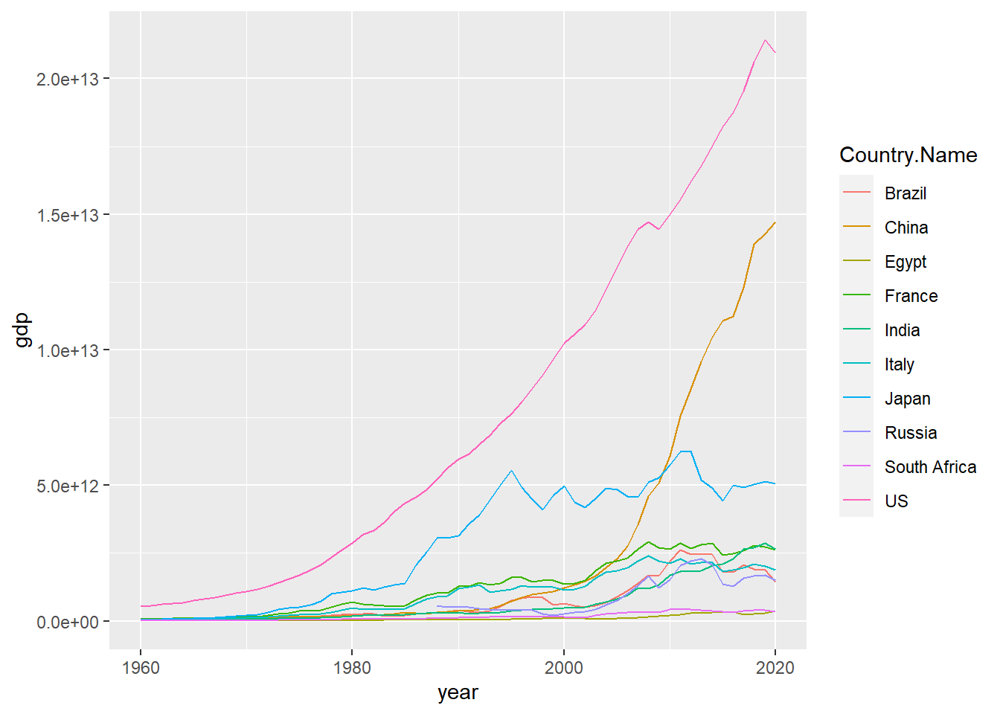
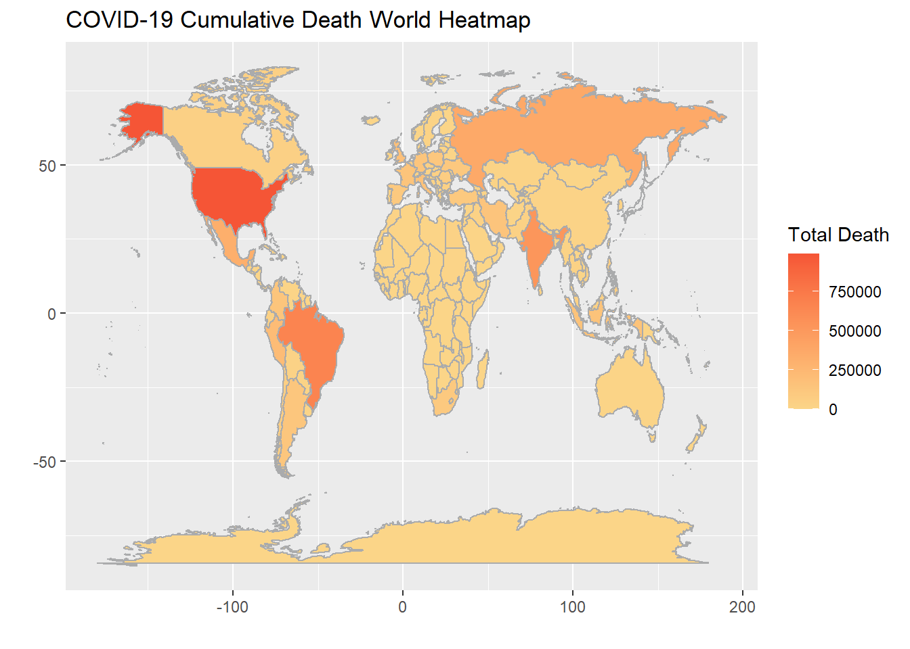
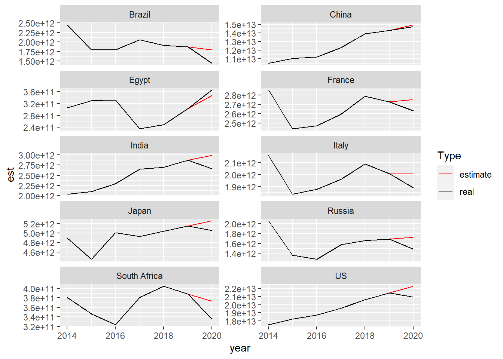
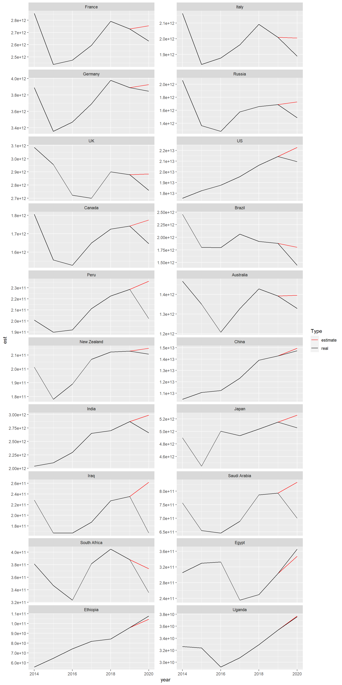

Chapter 5 Results
5.1 Disaster Data Exploration
5.1.1 Analysis of the relationship between number of disaster, Deaths and Damages
In this section, we want to study the relationship between death and property damage and the number of disasters. We group and integrate the data according to the Disaster.Type in the data. Then do bar plot with Disaster.Type and sort from large to small for the number of disasters, the number of deaths and property damage.
plot.data1 <- disaster %>%
select(Disaster.Type,Total.Deaths,Total.Damages.Adjusted,Disaster.Group)%>%
group_by(Disaster.Group,Disaster.Type) %>%
summarize(Death = sum(Total.Deaths),Damages = sum(Total.Damages.Adjusted),Num.disaster = length(Total.Deaths)) %>%
ungroup()
plot1.1 <- plot.data1 %>%
mutate(Disaster.Type = fct_reorder(Disaster.Type, Num.disaster)) %>%
ggplot(aes(x=Disaster.Type, y=Num.disaster)) +
geom_bar(stat="identity", width=.4) +
coord_flip() +
xlab("") +
theme(axis.title.x=element_blank(),plot.margin = unit(c(1.5,1.5,1.5,1.5), "lines"))
plot1.2 <- plot.data1 %>%
mutate(Disaster.Type = fct_reorder(Disaster.Type, Death)) %>%
ggplot( aes(x=Disaster.Type, y=Death)) +
geom_bar(stat="identity", width=.4) +
coord_flip() +
xlab("") +
theme(axis.title.x=element_blank(),plot.margin = unit(c(1.5,1.5,1.5,1.5), "lines"))
plot1.3 <- plot.data1 %>%
mutate(Disaster.Type = fct_reorder(Disaster.Type, Damages)) %>%
ggplot(aes(x=Disaster.Type, y=Damages)) +
geom_bar(stat="identity", width=.4) +
coord_flip() +
xlab("") +
theme(axis.title.x=element_blank(),plot.margin = unit(c(1.5,1.5,1.5,1.5), "lines"))
plot_grid(plot1.1,plot1.2,plot1.3,ncol = 1,align = "hv",labels = c("Disaster frequency over Countries (plot 1)","Disaster Deaths over Countries (plot 2)","Disaster Damages over Countries (plot 3)"),hjust = -0.5,vjust =1.2)
The plot 1 is a bar plot of the frequency of disasters. We can see that there are three orders of magnitude for the number of disasters. The first magnitude exceeded the other disasters by more than three times, and they were “Transport accident”, “Flood” and “Storm”. There are four kinds of disasters in the second magnitude, the values between them are very similar and more than twice the number of remaining disasters, they are earthquake, industrial accident, miscellaneous accident and epidemic. There are 12 catastrophes in the last magnitude, all of which occur relatively infrequently.
The plot2 is a bar chart of the number of deaths caused by a disaster. We can see that there are many disasters with very few or even zero deaths, so we only observed six disasters with significant numbers. They are Drought, Epidemic, Flood, Complex Disaster, Earthquake and Storm. Comparing the plot1 disaster frequency chart, we will find that the above five disasters do not completely belong to the first two orders of magnitude, and the frequency of complex disasters and droughts is actually much lower than that of the other three disasters. So we can think that deaths are not completely positively correlated with the frequency of disasters
The figure above is a bar chart of economic losses caused by a disaster. We can see that there are many disasters with little or no economic loss, so we only observed three very significant disasters and four relatively significant disasters. Very notable disasters are storms, floods and earthquakes. Relatively notable disasters are droughts, wildfires, extreme temperatures, and industrial accidents. Comparing to the plot2 disaster death map, we will find that except for floods and earthquakes, disasters that cause a large number of deaths are not necessarily accompanied by high economic losses. Comparing the plot1 disaster frequency map, we will find that floods, storms, earthquakes and industrial accidents are indeed frequent disasters, and most of these disasters that cause high economic losses are natural disasters.
cols <- character(nrow(plot.data1))
cols[] <- "black"
cols[plot.data1$Disaster.Group == "Natural"] <- "blue"
cols[plot.data1$Disaster.Group == "Technological"] <- "red"
cols[plot.data1$Disaster.Group == "Complex Disasters"] <- "orange"plot.data1.1 <- plot.data1 %>%
select(Disaster.Group,Death,Damages,Num.disaster) %>%
group_by(Disaster.Group) %>%
mutate(Death = log10(Death),Damages = log10(Damages),'Disaster Frequency' = log10(Num.disaster)) %>%
ungroup()
pairs(plot.data1.1[,c(2,3,5)],main = "Correlation Scatterplot",col=cols,pch=19)
In order to further verify the relationship between disaster frequency and death and economic loss, we have drawn a pairwise plot, in which blue points represent natural disasters, red points represent technological disasters, and orange points represent complex disasters. . Through this figure, we can find that there is a certain correlation trend among the frequency of disasters, deaths and economic losses.
target.Country = c('China','US','Russia','India','Brazil','Japan','France','Italy','South Africa','Egypt')
plot.data2 <- disaster %>%
filter(Country %in% target.Country) %>%
filter(Disaster.Group %in% c("Natural","Technological")) %>%
group_by(Country,Disaster.Group) %>%
summarize(Death = log(sum(Total.Deaths)),Damages = log(sum(Total.Damages.Adjusted)),'Disaster Frequency' = log(length(Total.Deaths)))
colnames(plot.data2) <- c("Country","Disaster Group","Death","Damages","Disaster Frequency")
parcoords(plot.data2,
color = list(
colorBy = "Disaster Group",
colorScale = "scaleOrdinal",
colorScheme = "schemeCategory10"),
rownames = F,
brushMode = "1D-axes",
reorderable = T,
queue = T,
withD3 = T)To further verify our conclusions, we selected ten typical countries for further analysis, they are “China’, ‘US’, ‘Russia’, ‘India’, ‘Brazil’, ‘Japan’, ‘France’, ’ Italy’, ‘South Africa’ and ‘Egypt’. Among them, we choose”China’, ‘US’, ‘Russia’, ‘India’, ‘Japan’, ‘France’, ‘Italy’ because these countries are relatively significant points in the previous scatter plot analysis. The choice of ‘South Africa’ and ‘Egypt’ is because South America and Africa are vast and have large populations, so we selected the countries that are representative of the continent for analysis.
We calculated deaths, economic losses and disaster frequencies for these ten typical countries according to different types of disasters and used these data to make interactive parallel coordinates plots. Through the above figure, we can find that there are certain clusters of deaths caused by technological disasters , and the deaths caused by natural disasters are very scattered. Moreover, the economic losses caused by technological disasters are often smaller than those caused by natural disasters. We think this may be related to the fact that technological disasters are generally smaller in scale than natural disasters.
disaster = read.csv('data/disaster.csv') %>%
select(-X)
mapdata = read.csv('data/Location.csv') %>%
select(-X)disaster_raw = disaster %>%
group_by(Year,Country) %>%
summarize(deaths = sum(Total.Deaths, na.rm = T),
damage = sum(Total.Damages, na.rm = T),
damageadj = sum(Total.Damages.Adjusted, na.rm = T)) %>%
unique()## `summarise()` has grouped output by 'Year'. You can override using the
## `.groups` argument.country = sort(unique(mapdata$Country))
data = data.frame(Year = as.character(rep(seq(1900,2022), each = length(country))), Country = rep(country, 123))
data$Year = as.numeric(data$Year)
data1 = data %>% left_join(disaster_raw)## Joining, by = c("Year", "Country")data1[is.na(data1)] = 0
rawdata = left_join(mapdata,data1,by=c("Country" = "Country"))
rawdata$Year = as.numeric(rawdata$Year)g2 = ggplot(rawdata, aes(x = long, y = lat, group = group))+
# the same as the setting with summary plot
geom_polygon(aes(fill = log10(deaths)), color = 'black')+
transition_manual(frames = Year) +
# use year as the animation parameter
scale_fill_gradient(low = '#FFF68F',high = '#FC4902') +
labs(title = paste('Year:','{current_frame}')) +
# make the title changes among different plot
ggdark::dark_theme_bw()## Inverted geom defaults of fill and color/colour.
## To change them back, use invert_geom_defaults().animate(g2,fps = 3)
g3 = ggplot(rawdata, aes(x = long, y = lat, group = group))+
# the same as the setting with summary plot
geom_polygon(aes(fill = log10(damageadj)), color = 'black')+
transition_manual(frames = Year) +
# use year as the animation parameter
scale_fill_gradient(low = '#FFF68F',high = '#FC4902') +
labs(title = paste('Year:','{current_frame}')) +
# make the title changes among different plot
ggdark::dark_theme_bw()
animate(g3,fps = 3)
Here, These two animations are a display of Death and Damage log pattern through different year. We can see that For Death data, It first appears to be large in Asia in the beginning of 20th century, and the from the late 20th century the number growth in Africa and South America. However, the damage shows the different pattern. It first appeared in America but then in late 20th century the damage in Asia(especially in China and India) become larger.
5.1.2 Analysis of the relationship between death and economic loss
plot.data3 <- disaster %>%
select(Country,Total.Deaths,Total.Damages.Adjusted,Continent) %>%
group_by(Country) %>%
summarize(Deaths = sum(Total.Deaths),Adjusted.Damages = sum(Total.Damages.Adjusted),
disaster.Num =length(Total.Deaths),Continent = unique(Continent))
# plot 1
p3.1 <- plot.data3 %>%
ggplot( aes(Deaths, Adjusted.Damages, size = disaster.Num, color=Continent)) +
geom_point() +
theme(legend.position = "none",plot.margin = unit(c(1.5,1.5,1.5,1.5), "lines")) +
geom_text_repel(aes(y=Adjusted.Damages,x=Deaths,label=Country), col = 'black', size = 4, alpha = 0.7)+
labs(color = 'Continent', size = "Disaster Frequency",y="Adjusted Damages")
# plot 2
p3.2 <-ggplot(plot.data3,aes(log(Deaths), log(Adjusted.Damages), size = disaster.Num, color=Continent, text = Country)) +
geom_point() +
theme(legend.position="none",plot.margin = unit(c(1.5,1.5,1.5,1.5), "lines"))+
geom_abline(intercept = 5,alpha=0.3)+
labs( x = "Deaths(log)",y="Adjusted Damages(log)")
# Set two plots on one canvas and share one legend.
prow <- plot_grid(p3.1,p3.2,labels = c("plot 1","plot 2"),label_size = 12,
label_x = 0, label_y = 0,
hjust = -0.7, vjust = -0.4)
legend_bottom <- get_legend(
p3.1 +
guides(color = guide_legend(nrow = 2)) +
theme(legend.position = "bottom")
)
plot_grid(prow, legend_bottom, ncol = 1, rel_heights = c(1, .15),labels = "The Relation between Deaths and Damage between each Country")
We calculated the cumulative economic losses, deaths, and occurrences of disasters for each country from 1900 to 2022, and plotted the economic losses and deaths as y and x, respectively, as a scatter plot “figure 1”, where the size of the dots correlates with the occurrence of disasters , and the colors are divided according to the continent (this data unifies South and North America into the Americas). Through figure 1, we can see that most of the countries are clustered in a small range, and only a few countries are very significant as outliers, such as the United States, Japan, China, India, Russia. However, these countries did not show a direct proportional trend in the number of deaths and economic losses. Among them, although the United States and Japan have fewer deaths, the economic losses are very large. While China, India and Russia suffered less economic losses, they have a large number of deaths. We believe that the reason for this phenomenon is that countries with developed economies will devote more resources to personnel protection, so even if the United States has a similar number of disasters as China, the death rate is far less than that of China. In contrast, the economic losses caused by disasters in these economically developed countries will be much greater than those in other countries. And countries like China, Russia and India are the most populous countries in the world, so that’s why they have the highest number of disaster deaths.
Then we log the deaths and economic losses, then make the scatter plot “figure 2”. From this graph, we can clearly see that each continent forms a certain cluster, and all countries have more economic loss ratios than death ratios (All countries are above line y=x). Countries in Africa have higher rates of death than economic losses compared to other continents. The second is Asian countries, which are generally distributed online, but the outlier countries, China, India and Bangladesh, are offline due to their large population. Japan is above the line because of its developed economy and small population. Above Asia are the countries of the Americas, Europe and Oceania. Among them, the United States’ economic loss rate far exceeds the death rate due to its developed economy, and Russia has become the only European country below the line because of its large population. Through this graph, we believe that the more developed the economy is, the greater the proportion of economic losses than deaths. In most developing countries in Africa, for example, the ratio of deaths to economic losses is higher than in the Americas and Europe. From this we can see that developed countries attach more importance to people’s protection.
5.2 COVID Data Exploration
Our cleared COVID data have a column of Country and the summed total death since the start of COVID. We can see from the summary, there are 195 Countries. The maximum death is 993,999 and minimum is 0. The average death is 31991. Since Country is a multi-categorical variable, and Death is continuous variable, we will use Cleveland Dot Plot first to see its general idea. Then, we will use geometrical heatmap to do some spatial analysis.
df_covid = read.csv("data/covid.csv") %>% select(-X)
summary(df_covid)## Country.Region Total.Death
## Length:195 Min. : 0.0
## Class :character 1st Qu.: 399.5
## Mode :character Median : 3143.0
## Mean : 31991.4
## 3rd Qu.: 17212.0
## Max. :993999.05.2.1 Cleveland Dot Plot
df_covid %>% arrange(desc(Total.Death)) %>% head(50) %>%
mutate("Country.Region" = fct_reorder(Country.Region, Total.Death)) %>%
ggplot(aes(x = Total.Death, y = Country.Region)) +
geom_point(color = "#D75D47", size = 2) +
labs(title = 'COVID-19 Cumulative Death of Countries',
y = '', x = "Total Death")
Above plot showed the total death of the top 50 countries in descending order. As we can see, United States have the largest death number, which is close to 1000k. Besides the US, four other countries stood out: Brazil, India, Russia, and Mexico. These five countries have much more cases than others, one reason is they have comparatively large population size. Three out of five top countries are in America, and we think they might contaminated each other in some degree. Another other death level is from Peru to Turkey. In this level many countries are European countries with smaller population. The main reason that caused their total death could be related to policies.
5.2.2 Heatmap
df_map = read.csv("data/Location.csv")
df_covid %>% left_join(df_map,
by = c("Country.Region" = "Country")) %>%
ggplot(aes(x = long, y = lat, group = group, text = Country.Region)) +
geom_polygon(aes(fill = Total.Death), color = "#AAABAC") +
scale_fill_gradient(low = "#FBD588", high = "#F55536") +
labs(title = "COVID-19 Cumulative Death World Heatmap",
fill = "Total Death", x = "", y = "") We plotted the heatmap to see some geographic pattern. As we can see most of the darker countries have a vast territory, and along with that larger population. Population could also be the reason African and European countries have comparatively pale colors. Another reason for Africa to have less death could be that COVID virus is afraid of heat. Island countries are less likely to contaminated by others, so they seems to have less deaths in general.
5.2.3 Time series for GDP
Now we want to compare the ovid damage with the disaster damage. However the Covid is not a disaster that can show the economic damage clearly as some natural disaster as. We then try to develop a GDP decrease by predicting a no Covid possible GDP and compare the difference.
First we need to find out the target countries and then making predictions.
target.Country = c('France','Italy','Germany','Russia','UK','US','Canada','Brazil','Peru','Australia','New Zealand','China','India','Japan', 'Iraq', 'Saudi Arabia','South Africa','Egypt', 'Ethiopia', 'Uganda')
GDP = read.csv('data/GDP.csv') %>%
select(-X) %>%
filter(Country.Name %in% target.Country) %>%
pivot_longer(cols = X1960:X2020, values_to = 'gdp', names_to = 'year') %>%
mutate(year = as.numeric(substr(year, 2, 5)))Now first see if there is a trend or seasonal effect
ggplot(GDP, aes(year, gdp))+
geom_line(aes(color = Country.Name))
I don’t think that there is a seasonal effect, but there is obviously a trend. Then we try to use difference method to get a stationary time series data for each country.
diff = c()
for(c in target.Country){
gdp = GDP %>% filter(Country.Name == c & !is.na(gdp))
gdp.dif1<-diff(gdp$gdp)
gdp.dif2<-diff(gdp$gdp,1,2)
a = fUnitRoots::adfTest(gdp.dif1)
b = fUnitRoots::adfTest(gdp.dif2)
diff = c(diff, ifelse(a@test$p.value>b@test$p.value, 1, 2))
}
diff##
## 2 2 2 2 2 1 2 2 2 2 2 1 2 2 2 2 2 2 1 2So we are more likely to do second order difference at this time. After several tries, we find that ARIMA(1,2,0) best fit the data
forecastgdp = c()
for(c in target.Country){
gdp = GDP %>% filter(Country.Name == c & !is.na(gdp) & year!=2020)
gdparima = arima(gdp$gdp,order=c(1,2,0))
forecastgdp = c(forecastgdp, forecast(gdparima,h=1)$mean)
}Since we’ve already get the estimate, we want to see the difference between real data and the estimate
GDPplot = GDP %>%
left_join(data.frame(est = forecastgdp, Country.Name = target.Country)) %>%
mutate(est = ifelse(year!=2020, gdp, est), Country.Name = fct_relevel(Country.Name,
c('France','Italy','Germany','Russia','UK','US','Canada','Brazil','Peru','Australia',
'New Zealand','China','India','Japan', 'Iraq', 'Saudi Arabia','South Africa',
'Egypt', 'Ethiopia', 'Uganda'))) %>%
filter(year > 2013)## Joining, by = "Country.Name"col = c(estimate = 'red', real = 'black')
ggplot(GDPplot)+
geom_line(aes(year, est, col = 'estimate'))+
geom_line(aes(year, gdp, col = 'real'))+
facet_wrap(~Country.Name, scales = "free_y", nrow = 10)+
scale_colour_manual(name = "Type", values = col)
As we can see from the plot, all the countries suffered from a GDP decrease in 2020 except China, Egypt, Ethiopia and Uganda. For China, the reason is that it use a compulsory policy to prevent the Covid from spreading thus control the cases. For the African countries, they are now going through a rapid economic increasing which can not be shown by the time series model, so that their real value are larger than the estimate value.
disaster = read.csv('data/disaster.csv') %>%
select(-X) %>%
filter(Country %in% target.Country) %>%
group_by(Country, Continent) %>%
summarize(Damage = sum(Total.Damages.Adjusted))## `summarise()` has grouped output by 'Country'. You can override using the
## `.groups` argument.coviddamage = GDPplot %>%
filter(year==2020) %>%
mutate(diff = est - gdp) %>%
left_join(disaster, by = c('Country.Name'='Country'))
g = ggplot(coviddamage, aes(x=log(Damage), y = log(diff+abs(min(coviddamage$diff))), text = Country.Name))+
geom_point(aes(color = Continent), size = 3)+
labs(x = 'Damage(log)',
y = 'The GDP difference(Scaled log)',
title = 'The damage from Covid vs. other Disaster')
ggplotly(g)## Warning: Use of `coviddamage$diff` is discouraged. Use `diff` instead.As we can see from the plot, The countries from Oceania forms a cluster under the line which means that the Damage from other Disaster is far more larger than the Covid damage. It’s because These countries are far from mainland and will not that suffer from covid. For African countries, they are really suffer from other disease like Ebola instead of Covid. For Western and Mid Asian countries, they are suffering from an economic crisis so the GDP decrease can’t really represent the true Covid damage.